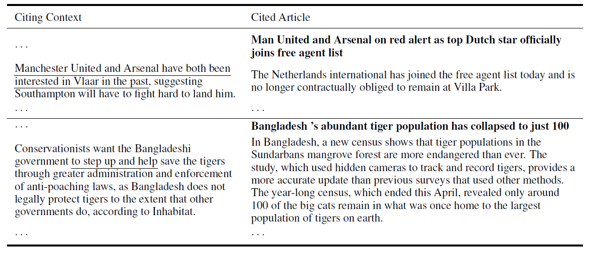
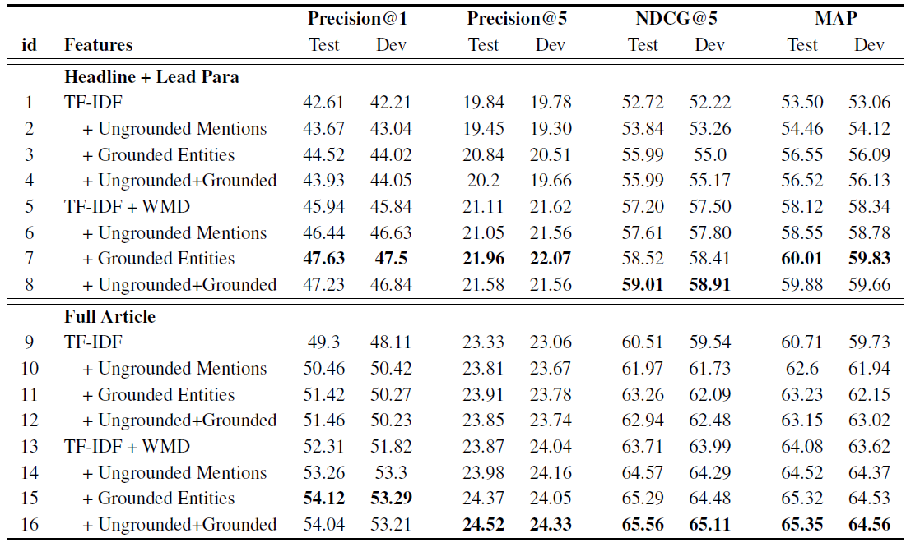

Link to Paper: [PDF]
Authors: Hao Peng, Jing Liu, Chin-Yew Lin
Conference: ACL 2016
When reading online news articles, we often see there are parts of the article where certain words/phrase are associated with a hyperlink. That hyperlink would link to an earlier news article about the event described by the words with the hyperlink, or called the anchor text, to provide the readers more detailed materials should they be interested in knowing more. It would be helpful for the reporters writing news articles if there is a system that suggests possible news citations.
In the paper, the authors explored the task of news citation recommendation, and proposed a method for generating news citation suggestions for an anchor text. For every input passage that contains an anchor text with hyperlink, the goal is to output a ranked list of news articles that are suitable to be the references of the anchor text. The input passage is called the "citing context", while the output list is called the "news citation recommendation", and it should be ranked in the order of the relevance to the anchor text. In the experiment, a learning to rank algorithm is used, and each data point in the dataset would consist a context-article pair, where context is the citing context, and article is one of the articles on the list of recommendations. (See table 1 for example.)

Table 1: an example of 2 citing-context & cited-article pairs (table from the paper)
Earlier methods proposed by others on this task included the use of string-based overlap, machine translation measures, and dependency syntax to measure the similarity (relevance) between the anchor text and the cited article. More recently, some works also focused on using neural network methods. However, the above approaches are not exactly suitable for handling this task due to the variety and ambiguity problem (explained in the next section). This work proposed a new system that deals with the variety and ambiguity problem when measuring similarity.
In order to calculate the relevance of a previous article to the anchor text, it’s necessary to measure the similarity between a context-article pair. The paper’s measuring method is based on both implicit semantics (for dealing with the variety problem) and explicit semantics (for the ambiguity problem).
The variety problem refers to the fact that the same meaning could be expressed with different words/phrases. For example, a citing context might refer to the singer Shawn Mendes as "Mendes", but the cited article might contains a sentence that refer to the Shawn Mendes as "the Canadian singer-songwriter"; however, they’re both referring to the same person. The ambiguity problem refers to the fact that the same words/phrases can mean differently in two different articles. For example, the word “bruins” might be referring to the actual animal, a brown bear, in an article, but is referring the UCLA students in another.For implicit semantics, the paper used the “word mover’s distance” (WMD) which was proposed by Kusner et al in 2015 [1]. Word mover’s distance is a metric to calculate the distance of two documents by viewing it as an optimal transportation problem. The measuring of word mover's distance involved two documents represented as bag-of-word vectors, and the cosine similarity of word2vec embeddings for evaluating the distance between words. The WMD between the context-article pair is the minimum cumulative cost required to “move” all words from the context to the article, with the distance between two words calculated by the cosine similarity of their word2vec representations.
For explicit semantics, the paper uses the ground entity method and measures the similarity by calculating the entity overlap between the context-article pair. First, the method matches the entities mentioned in both the context and the article to a knowledge base (e.g. Wikipedia entries) to check if the entities refer to the same thing. Then the method counts the overlapped entities and calculates the precision (entitiy-overlap(context,article)/entity-count(context)) and recall (entitiy-overlap(context,article)/entity-count(article)).
The authors conducted experiments to show the effectiveness of using the word mover’s distance and the ground entity method, and compare them to the baseline of TF-IDF distance and ungrounded mentions. (In the embedding-based matching for the ungrounded mentions method, each mention is represented simply by the averaged vectors of all the word it contains, unlike the ground entity method which grounds to Wikipedia entries first.)
For the experiment, the authors constructed the dataset from a month’s news articles from Bing News. Each data point in the dataset is a pair of a citing context and a cited article extracted from the news articles, referred to as “ground truth”, to be used as positive samples. Then, given a citing context, construct a candidate set of top 200 relevant articles, retrieved using TF-IDF distance. For each training pair, 5 articles outside of the ground truths articles are randomly selected to use as negative samples. The constructed dataset is then split into training/validation/testing datasets. Then the linear model in RankLib [2] was used for learning to rank implementation, and different models are used for similarity (relevance) measuring. TF-IDF was used as baseline model, and different groups of features (word mover’s distance and grounded entity) were added to the baseline model to see how well the new model performs.
From the experiment results in the paper, we could see that that adding word mover’s distance and ground entity to the baseline model improved the performance. (See table 2, from the paper.)

Table 2: experiment results on dataset collected from Bing News (table from the paper)
News Citation Recommendation with Implicit and Explicit Semantics discussed the task of news citation recommendation, and proposed a new re-ranking system using learning to rank, with word mover’s distance and ground entity methods for relevance measurement. A real world dataset, constructed from Bing News, was used for the experiments. The paper also presented quantitative analysis on how the methods performed on the task.
Despite the efficacy of the method that could be seen in the experiment results, the authors also noted the issue that sometimes the ground entity method leads to mistakes, generally caused by the limited performance of the entity recognition and disambiguation system. Dealing with this issue is something that could be improved on in future works.